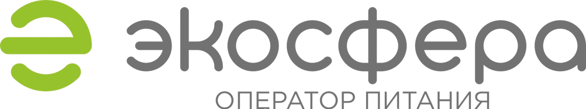

Стратегический контур · 12 месяцев
Развитие AI‑направления
группы компаний «Экосфера»
От внутренней эффективности — к самостоятельной бизнес-единице и внешнему рынку
Стратегическая модель
Сначала доказываем ценность внутри. Затем масштабируем за пределы компании.
Внутренняя автоматизация
Сокращаем ручной труд, сроки и зависимость от подрядчиков на собственных процессах.
Надежный фундамент
Инфраструктура, интеграции с 1С, правила данных и информационная безопасность.
Внешний рынок
Выводим решения с подтвержденным эффектом в согласованные неконкурентные отрасли.
Целевое состояние
К середине 2027 года
внутри компании
Работают во внутреннем контуре и имеют измеримый экономический эффект.
Внешних пилота
Запущены в приоритетных, согласованных и неконкурентных для организации отраслях.
Контур управления
Правила данных, AI-инструментов и подрядчиков; отдельный учет и готовность к P&L.
Приоритет 1
Внутренняя трансформация «ЭкоСферы»
Маркетинг и визуальные коммуникации
Перевести регулярное производство контента и визуальных материалов внутрь компании; внешних подрядчиков сохранять для редкой и узкой экспертизы.
Технологи и составление меню
Создать единую оцифрованную базу рецептур, технологических карт, норм, пищевой ценности, аллергенов и используемых сборников.
HR и вахтовый персонал
Единая CRM-база кандидатов, действующих и бывших сотрудников, истории откликов, документов и трудоустройства.
Пример ценностной цепочки в производственно-технологическом отделе
От данных к управляемому меню
Единая база
Рецептуры, технологические карты, нормы, пищевая ценность, аллергены и сборники.
Расчет и проверка
Цикличные меню, подбор замен, контроль ограничений и расчет себестоимости.
1С и закупки
Актуальные цены, пересчет отклонений и ускоренная оценка замен в рабочем процессе.
Приоритет 2
Технологический и кадровый фундамент
AI-агенты и программные роботы
AI-помощники для бухгалтерии, закупок, кадров, производства и управленческой отчётности.
Интеграции и компетенция
Стандартизированные коннекторы с 1С и другими учётными системами для безопасного обмена данными.
Внутренний архитектор связки «бизнес-процессы — учётные системы — автоматизация» сохраняет экспертизу внутри компании.
Контролируемый контур
Чувствительные данные, локальные AI-модели и интеграции с 1С остаются внутри компании.
Предсказуемая стоимость при стабильной нагрузке, меньше зависимости от внешних сервисов и возможность закрытых решений под требования заказчика.
Инфраструктура и безопасность
Гибридный контур: контроль там, где он необходим
Чувствительные данные
Персональные и конфиденциальные данные, критичные интеграции с 1С, локальные AI-модели.
Правила и защита
Категории данных, роли и доступы, резервное копирование, восстановление, согласованные AI-инструменты, SLA и приемка.
Некритичные и пиковые задачи
Бюджетный старт и гибкое масштабирование при подтвержденном размещении и обработке данных в России.
Приоритет 3
Выход на внешний рынок
Фокус предложения
Продаём не «искусственный интеллект», а измеримое улучшение процесса: быстрее, дешевле, точнее и безопаснее.
Отраслевая сегментация
На первом году выбираем не более 2–3 отраслей, где уже есть связи и понимание процессов.
Приоритет: медицина, образование, социальное обслуживание, нефтегазовый сектор и промышленные предприятия.
Модель пилотного кейса
Одна узкая измеримая задача: исходные показатели, прототип, ограниченный пилот, замер эффекта и упаковка стандартной конфигурации.
Организационная модель
От центра компетенций —
к бизнес‑единице
Внутри «Экосферы»
Отдельный бюджет, портфель проектов и условный P&L. Быстрый запуск и доступ к процессам.
Подтвержденный спрос
Стабильная внешняя выручка, продуктовая линейка, повторяемые кейсы и самостоятельная экономика.
Отдельная структура
Свои договоры, команда продаж и масштабируемый набор решений для внешнего рынка.
Остается внутри
- Постановка задач и бизнес-архитектура
- Доступ к данным и критерии приемки
- Оценка эффекта и решение о масштабировании
Закрепляется в договорах
- Права на код, дизайн, базы и документацию
- Контроль репозиториев, доменов и учетных записей
- Конфиденциальность и возврат/удаление данных
План реализации
Дорожная карта на 12 месяцев
I квартал
Аудит процессов, данных и расходов; выбор 2–3 проектов; требования к инфраструктуре и безопасности; управленческий учет.
Результат: утвержденный портфель, владельцы, базовые метрики и архитектурный план.
II квартал
Пилоты по меню, маркетингу/визуалу и HR; первые интеграции с 1С; расчет инфраструктуры; интервью с заказчиками.
Результат: первые внедрения и подтвержденный внутренний эффект.
III квартал
Промышленный запуск успешных решений; 1–2 внешних пилота; приоритетные отрасли; каталог услуг и стандарты.
Результат: кейсы, повторяемая методика и коммерческое предложение.
IV квартал
Тиражирование, первые внешние продажи, оценка самоокупаемости, план расширения и решение об оргформе.
Результат: готовность к бизнес-единице и стратегия второго года.
Управление масштабированием
Ворота принятия решений
После каждого пилота: подтвержден ли эффект и есть ли смысл масштабирования?
Перед покупкой сервера: подтверждены ли нагрузка, безопасность и экономическая целесообразность?
Перед расширением штата: есть ли стабильный портфель и загрузка?
Перед выделением структуры: есть ли повторные внешние продажи и самостоятельная экономика?
Итоговая логика